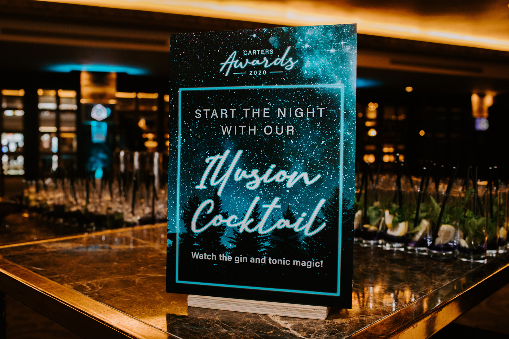
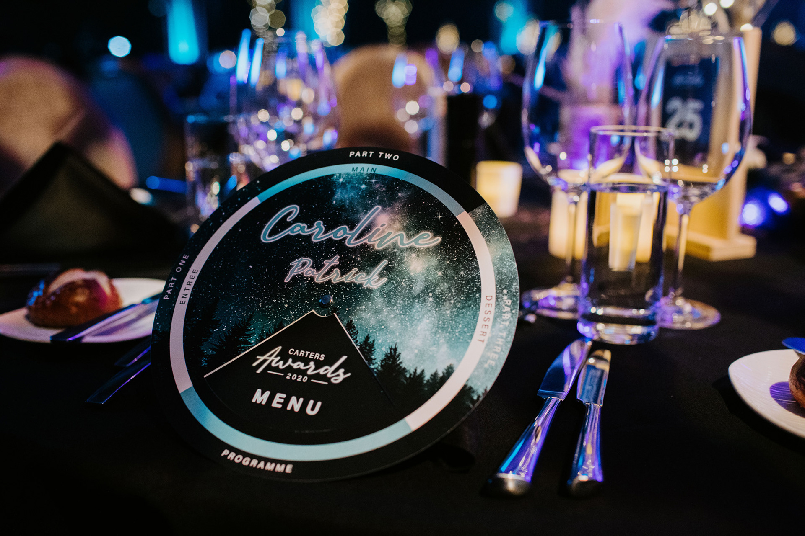
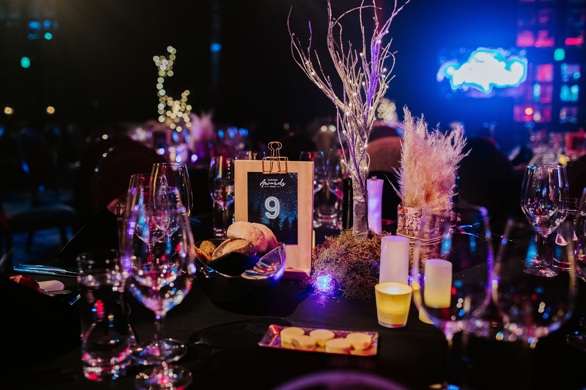
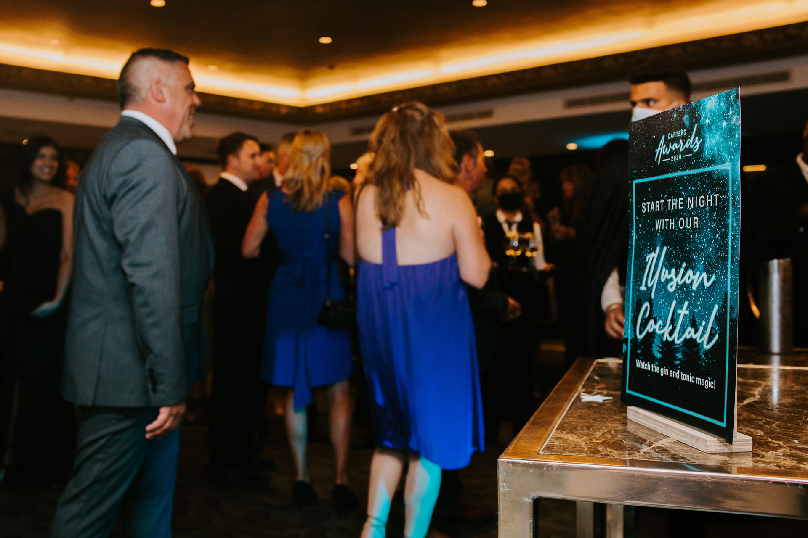
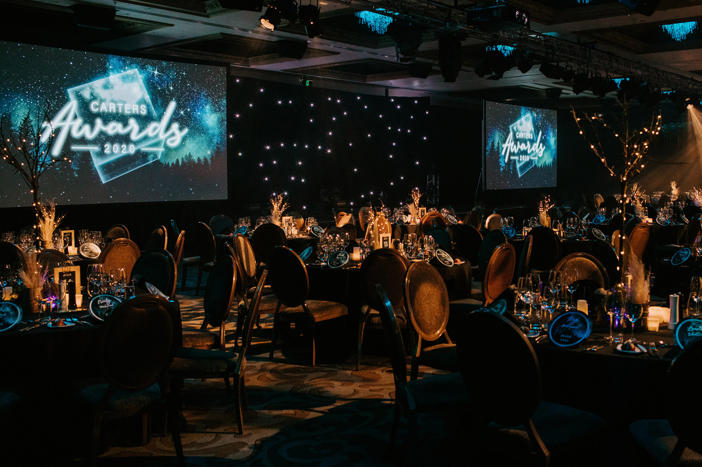
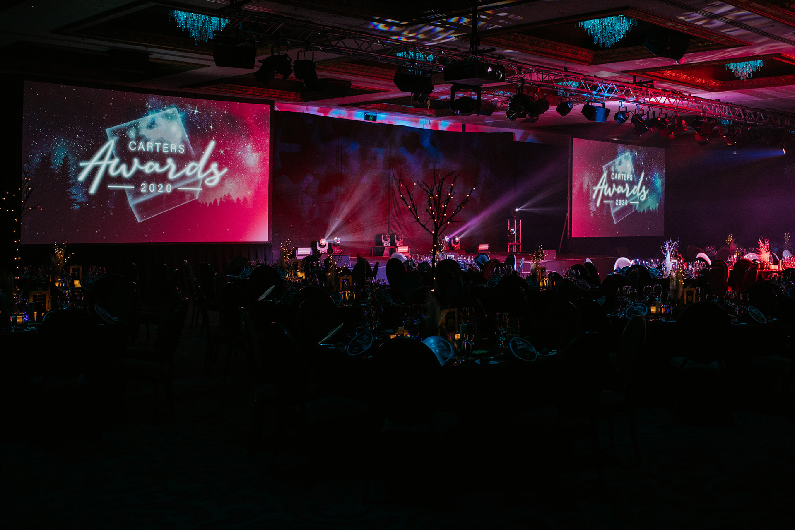

Selected work
CARTERS Awards 2020
Summary
I developed the visual treatment for the CARTERS Awards Night, shaping the event around the theme of “A night of illusion”.
The project focused on creating an event identity and supporting assets that felt theatrical, polished, and memorable for an internal company celebration.
Each year CARTERS Building Supplies holds an internal company awards dinner to celebrate those individuals and branches that have outstanding results.
This year’s theme was ‘A night of illusion’ filled with magic, intrigue, and surprises.





For over a decade, I’ve been turning ideas into experiences and digital things people actually want to engage with. I work across branding, digital design, marketing, UI/UX, and AI-assisted vibe coding and design workflow. I’m happiest where storytelling, design, and technology overlap as that’s usually where the good stuff happens.